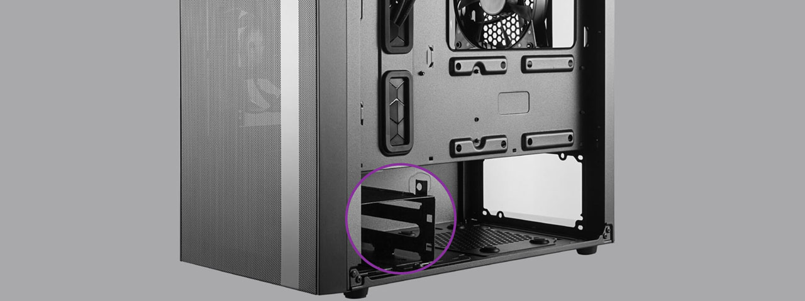
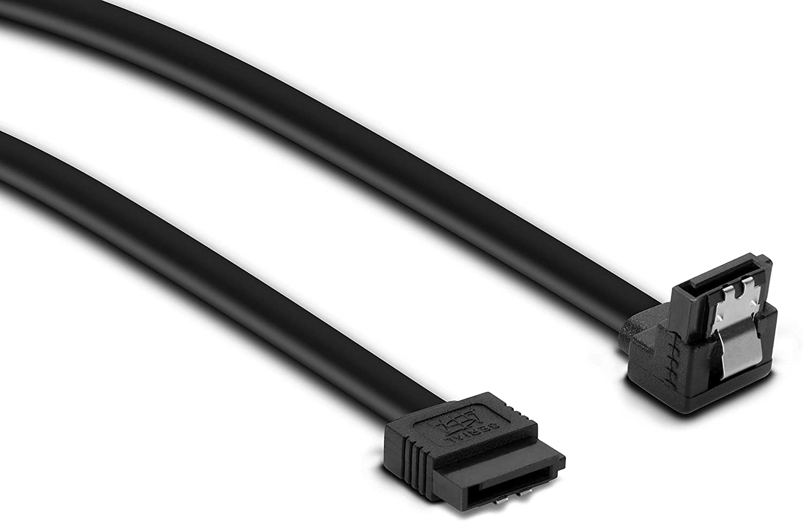

Installing Storage Drives
Whether your external storage drive is HDD or SSD the mounting process is the same. Remove the back palte and locate the drive cage or drive bay inside your case, this is where the storage drives will be mounted, and is usually towards the front of the case. The orientation of the drive cage varies from case to case but the general idea is to slide the drive in place and then use screws to mount it. Some drives are mounted and screwed one from the sides of the drive while others are mounted and screwed from the top and bottom of the drive. This process will be straightforward once you locate your drive cage.
Now that the drive is mounted, it needs to be plugged in. The large majority of modern drives use SATA connectors included with the motherboard. These cables are designed to fit only one way and are very straightforward to plug into the drive. The motherboard manual will also show where the SATA connectors on the motherboard are which is again a straigthforward process. Which SATA port you use on the motherboard does not really matter but take note of which one the drive is plugged into so that can be validated when turning on the PC for the first time.
Click the next button to move on to the next step:Installing the GPU